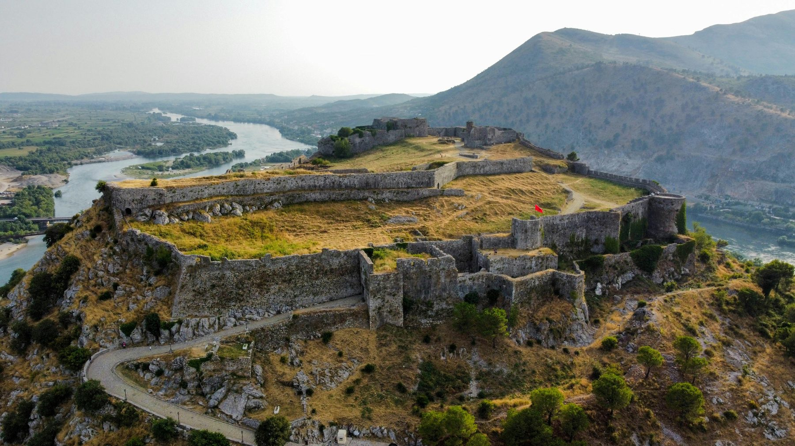
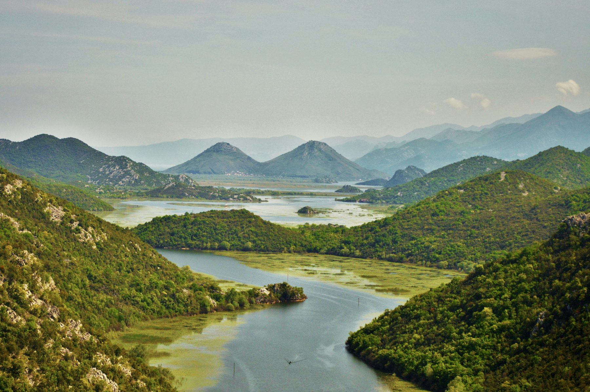
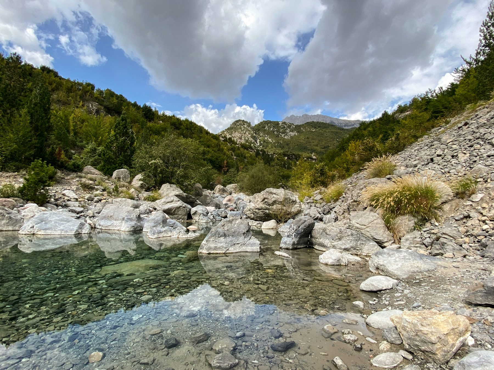
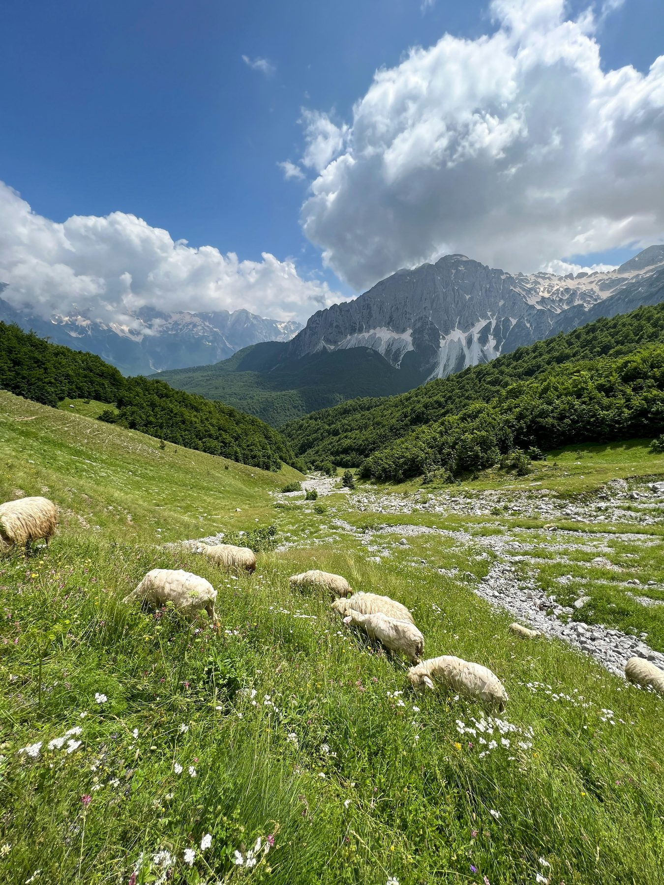

Shkodër
No. 10 · Albania · Day 9 · gateway to the lakes and the Alps
One night, treated as a half-day stop en route to Tirana — Rozafa plus a pedestrian street is a perfect amount of Shkodër.
Rozafa
The castle sits on a hill where two rivers meet, and the views do most of the talking: water curling around the walls, the plain beyond, mountains holding the horizon. The legend attached involves a wife walled into the foundations — standard fortress-building folklore — and the spring inside the walls is supposedly her milk, so the story goes, still flowing. Walk the full circuit of the walls; the light is best late afternoon, and the entry is cash.
Back in town, the evening belongs to the pedestrian street: a slow passeggiata, cafés, and our first taste of Albanian prices, which after Croatia feel like a rounding error in our favour.
The lake
Lake Skadar starts practically at the city limits — it's one lake shared by two countries, and Shkodër is the Albanian gateway to it. From the hills south of town it looks like this: reedbeds, a river braiding through the green, and conical hills stepping away into the haze. The classic way in is a boat from Virpazar across the Montenegrin border — a calm day between mountains; the boat trips, pelicans and river bends are covered on the Lake Skadar page (euro side), while this page holds the Albanian end of the water.

Into the Alps
Shkodër is also the launchpad for the two mountain add-ons the trip keeps half-deciding about. The Koman ferry — the fjord-like waterway day — is one; see the Komani Lake page. The other is the great undecided question of Theth or Valbona: a night (or two) in the Accursed Mountains, added by organised tour from Shkodër, trading a relaxed pace for sheep meadows, boulder rivers and peaks that earned their name.
Still open, deliberately: the itinerary holds at a relaxed pace unless we both vote mountains. If we do, this is what's waiting up there.


Field notes
Cash matters from here on: the lek (ALL) doesn't take kindly to cards in konobas and at the castle gate. Get small notes — boat skippers, taxi drivers and market stalls all prefer them. And drink the local rakia; asking what's fresh is both the menu and the small talk.
Eat & drink: first round of rakia; ask what's fresh — this is where "carry cash" starts to matter. Currency is the lek (ALL).Field note · Balkans 2027